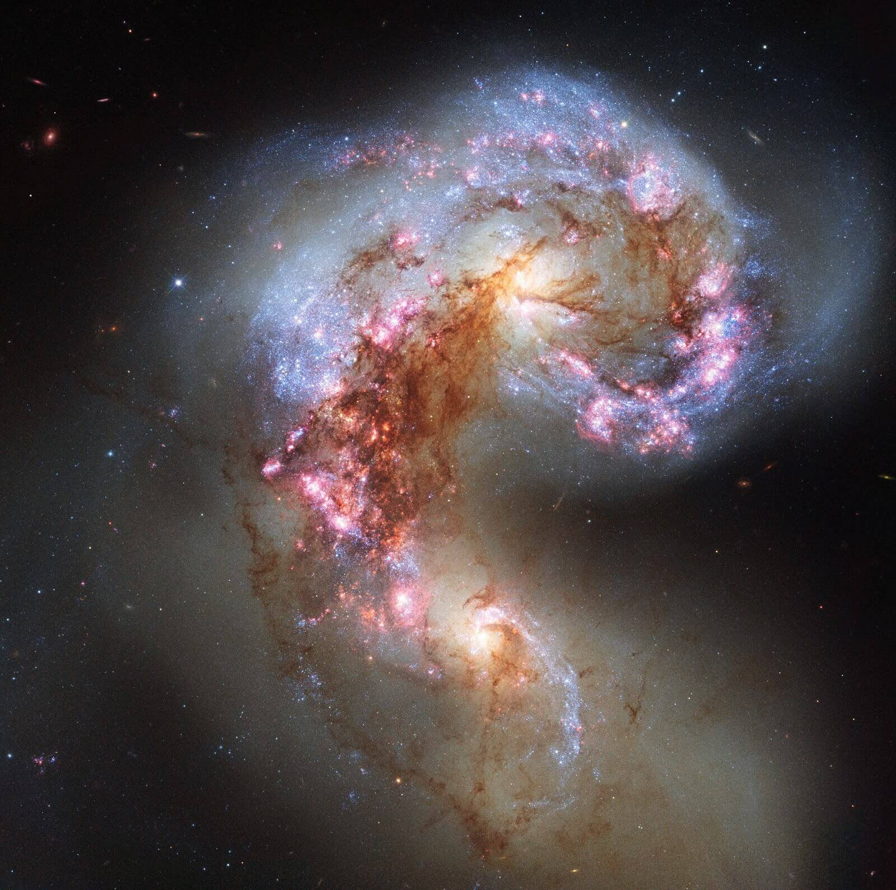

The Art Behind the Antennae Galaxy
Mehri Sadri. 7/18/2020

The galaxies retain their ‘curved’ shape from gravitational tides. (ESA/Hubble and NASA)
The galaxies retain their ‘curved’ shape from gravitational tides. (ESA/Hubble and NASA)
The appeal towards the outer world has been one of major curiosity and slight fear, as scientists, specifically astronomers, have had the capabilities to discover more about what lies outside Earth’s realm. These discoveries, although extensively documented on a mathematical and quantitative basis, are also depicted through the breathtaking photos taken by powerful telescopes, such as the Hubble Space Telescope. A single photo can reveal both a scientific and artistic standpoint behind a concept, such as explaining an entity’s gravitational pull or discussing the breathtaking color contrasts of the photo.
The photo above illustrates the Antennae galaxy, which consists of interacting galaxies within Corvus- a small constellation located in the Southern Celestial Hemisphere. The name “antennae” comes from the general shape made by these two merging entities which resemble a bug’s antennae. This occurred during their first encounter millions of years ago. The merging nature of these two spiral galaxies creates millions of new stars within its proximity by the minute, as well as emits hydrogen gas, which radiates some of the magnificent shades seen by the Hubble Space Telescope. According to an article from the Planets, the Antennae galaxy consists of two different spiral galaxies that have been slowly edging towards each other over the last hundred million years. Although there is an abundance of stars between the two colliding galaxies, estimated at around 300 billion, scientists suspect that most of these gas balls will dissipate within the next few million years. Though the galaxies have touched surfaces, scientists have estimated that they will not fully merge with each other for another 400 million years. This “superstar,” when completely merged, will contain combined cores filled with stars old and new.
Some think that this galactic galore was discovered recently; however, this assumption is incorrect. The colliding masses were first observed by British scientist William Hershel about 250 years ago. He used a ‘primitive’ version of a telescope that was made of bulky material. Although it cannot be compared to Hubble, it was enough for him to not only identify the Antenna galaxy, but also many other objects such as the planet known today as Uranus.
In terms of logistics regarding the “mutant” creation, the astronomical sizes prove the glory of space The size of the Antennae galaxy in Corvus is around 500,000 million light years in diameter. One light year consists of a distance of around 6 to 7 trillion miles, meaning that we cannot discover the entirety of this monster anytime soon without adequate technology to match its madness.
The machine that snapshots the wonderful sights of not just these Antennae galaxies, but hundreds of other wonders, is known as the Hubble Space Telescope. It is around the size of a large bus, and although this may seem minuscule in comparison to other objects in space, its capabilities are nothing short of large. It weighs approximately 24,500 tons and travels around the Earth at a speed of 17,500 miles per hour.
Although there may be speculation that the telescope uses some sort of revolutionary hi-tech software to take the glorious photos we see from Earth, the photo-taking mechanics are no different from a cell phone, according to NASA. After a photo is taken by the telescope, it is sent through radio waves back down to Earth. The telescope has revealed to scientists how certain galaxies form, and it has given them an insight as to how certain parts of our universe function. As Hubble becomes more advanced, we can hopefully expect the telescope to delve into our universe; a universe that has remained one of the greatest mysteries of our time.
Just like many other galaxies, the photo of this antennae phenomenon contains vivid visuals with a continuity of color. The dominant hues within the photo are oranges, purples, pinks and browns. The two bright and orange flares present in the photo are the previous cores of the two galaxies before merging, and both of these glowy-spheres contain stars of their own. There are filaments of pink present within the photo as well, which represent hydrogen gas present in the matter. This beautiful pink color is caused by a mixture of red and blue hues emitted from the gas itself through different electron energy levels (as red and blue are both primary colors known to produce a pinkish-purple when mixed). The bright pinks and purples mixed with the subtle browns and oranges create a blissful combination of warm and cool colors: a contrast of positive and negative radiations that pair perfectly.
Although the Antennae galaxy has been thoroughly studied by scientists, it is not the only astronomical object that attracts the attention of astronomers. The outside world is filled with entities -- stars, moons, and planets -- that illustrate unique qualities waiting to be further examined. The merging, colorful galaxies are filled with these celestial objects, rendering a world within a world that is up to us to find out about.